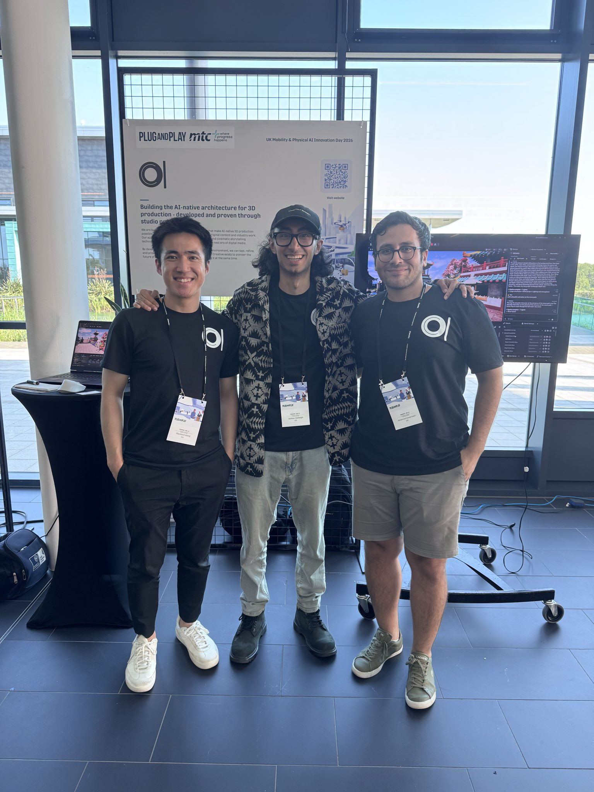

Sep-24
Conference Presentation in 4th IMA Conference on Inverse Problems
Presented research findings at the 4th IMA Conference on Inverse Problems from Theory to Application, Bath, UK.
Machine Learning Research Engineer at Zero One Creative
Generative Models - Computer Vision - Optimisation - Inverse Problems
I am a machine learning researcher and engineer focused on generative 3D, computer vision, optimisation, inverse problems, and spatial AI. At Zero One Creative, I work on Amara, an AI platform for generating and iterating 3D environments from simple prompts.
I built EviBind, an evidence-binding layer for fail-closed LLM tool execution: the model can select policy-admissible evidence, but it cannot invent protected values at the release boundary.
My research spans hyperparameter learning, vision-language and diffusion models, and test-time adaptation across academic and industrial R&D. Academically, I undertook PhD studies and an MRes in Statistical Applied Mathematics under Dr. Matthias Ehrhardt and Dr. Subhadip Mukherjee, after earning an MSc in Applied and Theoretical Mathematics from PSL Research University in Paris.
Presented research findings at the 4th IMA Conference on Inverse Problems from Theory to Application, Bath, UK.
My talk from 26 May 2026 on Bilevel Learning with Inexact Hypergradients is now available on YouTube. The talk focuses on bilevel optimisation, inexact hypergradients, and scalable learning algorithms.
We released AmaraSpatial-10K, a spatially and semantically aligned 3D dataset of 10,100 synthetic assets for spatial computing and embodied AI. Available on Hugging Face with the accompanying preprint on arXiv.
Attended SSVM 2025 (Scale Space and Variational Methods in Computer Vision), where I gave an oral presentation of "Fast Inexact Bilevel Optimization for Analytical Deep Image Priors" and presented a poster on "Bilevel Learning with Inexact Stochastic Gradients". Honoured to have received an SSVM support grant to attend the conference.
Invited speaker at the ICMS Workshop on Big Data Inverse Problems, Edinburgh, UK, presenting MAID.

Shared an update from Plug and Play UK's Mobility & Physical AI Innovation Day, where we presented Amara, Zero One Creative's agentic 3D creator for artist-led 3D prototyping and storytelling.
Presented research findings at the 21st Conference on Advances in Continuous Optimization, Lund, Sweden.
01C launched Amara, an AI platform for generating and iterating full 3D worlds from simple prompts for creative and production workflows.
Our papers "Bilevel Learning with Inexact Stochastic Gradients" and "Fast Inexact Bilevel Optimization for Analytical Deep Image Priors" accepted to 10th International Conference on Scale Space and Variational Methods in Computer Vision (SSVM 2025).
New preprint "Bilevel Learning with Inexact Stochastic Gradients" with Subhadip Mukherjee, Lindon Roberts, and Matthias Ehrhardt.
New preprint "An Adaptively Inexact Method for Bilevel Learning Using Primal-Dual Style Differentiation" with Lea Bogensperger, Matthias Ehrhardt, Thomas Pock, and Hok Shing Wong.
Presented research findings at the minisymposium "From model-blind to model-aware learning of inverse problems in imaging", in ICIAM 2023, Tokyo, Japan.
Our chapter "Learning regularization functionals for inverse problems: a comparative study" was published in the Handbook of Numerical Analysis (Elsevier). Available here (DOI: 10.1016/bs.hna.2026.04.001).
Our paper "An Adaptively Inexact First-Order Method for Bilevel Optimization with Application to Hyperparameter Learning" has been accepted to the SIAM Journal on Mathematics of Data Science (SIMODS).
Evidence Bound Tool Calls
Authenticated evidence binding for fail-closed LLM tool execution.
01C-Amara
Authenticated evidence binding for fail-closed LLM tool execution. Trusted code authenticates model-selected evidence, replays derivations, validates the tool contract, and materializes the executable call atomically. The model can select policy-admissible evidence; it cannot invent or rewrite protected values at the release boundary.
Diffusion-based image restoration and inverse problems, with implementations of DiffPIR, DPS, RePaint, and DDRM for inpainting, CT, and deblurring.
Official implementation of continuous neural reparameterization as a deep geometric prior for robust fixed-chart UV repair.
Physics-informed graph neural networks for learning PDEs on 3D meshes.
Method of Adaptive Inexact Descent for bilevel learning and hyperparameter optimisation.
Inexact stochastic bilevel learning, with code for the SSVM paper on inexact stochastic gradients.
Fast inexact bilevel optimisation for analytical deep image priors.
ADMM approach to train neural networks without gradients.
Impact of neural network architecture and initialisation on gradient confusion and stochastic gradient descent.
Scripts for reproducing AmaraSpatial-10K evaluations and benchmarks.
Code for the comparative study of learning regularisation functionals for inverse problems.
From prompt and LLM parsing to semantic understanding and 3D generation using diffusion models.
M. S. Salehi
Johannes Hertrich, Hok Shing Wong, Alexander Denker, Stanislas Ducotterd, Zhenghan Fang, Markus Haltmeier, Zeljko Kereta, Erich Kobler, Oscar Leong, Mohammad Sadegh Salehi, Carola-Bibiane Schoenlieb, Johannes Schwab, Zakhar Shumaylov, Jeremias Sulam, German Shama Wache, Martin Zach, Yasi Zhang, Matthias J Ehrhardt, Sebastian Neumayer
M. S. Salehi, A. Perkins, I. Maurell, A. Dabbagh, R. Wong
M. S. Salehi, S. Mukherjee, L. Roberts, M. J. Ehrhardt
L. Bogensperger, M. J. Ehrhardt, T. Pock, M. S. Salehi, H. S. Wong
M. S. Salehi, S. Mukherjee, L. Roberts, M. J. Ehrhardt
M. S. Salehi, T. A. Bubba, Y. Korolev
Mohammad Sadegh Salehi, Subhadip Mukherjee, Lindon Roberts, Matthias J Ehrhardt
Adaptive inexact first-order methods for bilevel optimisation and hyperparameter learning, including MAID, ISGD, and primal-dual style differentiation. Published in SIMODS, JMIV, and SSVM 2025.
Fast inexact bilevel optimisation for analytical deep image priors, with an SSVM 2025 paper and accompanying code.
Comparative study of learning regularisation functionals for inverse problems, published as a Handbook of Numerical Analysis chapter.
AmaraSpatial-10K, a spatially and semantically aligned 3D dataset of 10.1k synthetic assets for spatial computing and embodied AI.
Continuous neural reparameterization as a deep geometric prior for robust fixed-chart UV repair.
Implementations of DiffPIR, DPS, RePaint, and DDRM for inpainting, CT, and deblurring.
Recorded talk
A recorded talk on bilevel learning, inexact hypergradients, and scalable optimisation methods for hyperparameter learning.
Invited minisymposium - EUROPT 2025, University of Southampton, UK
Workshop on Recent Advances in Learned Regularisation, UCL, London, UK
Invited minisymposium - EUROPT 2024, Lund, Sweden
Invited talk - ICMS Workshop on Big Data Inverse Problems, Bayes Centre, Edinburgh, UK
Invited minisymposium - EUCCO 2023, Heidelberg, Germany
Invited minisymposium - ICIAM 2023, Tokyo, Japan
An interactive snapshot of the AmaraSpatial-10K release: 10.1k synthetic 3D assets with semantic labels, rendered views, mesh and collision paths, metric anchors, geometry metrics, and text metadata.